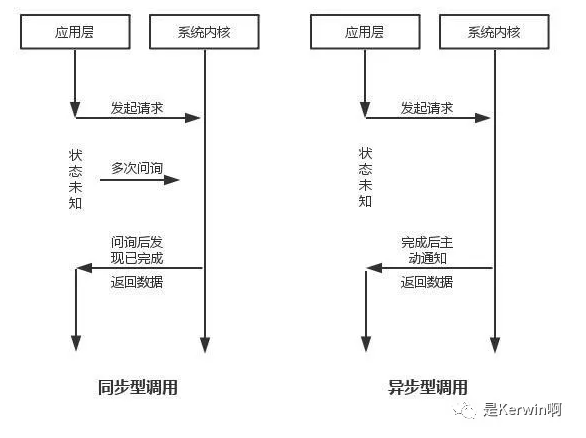
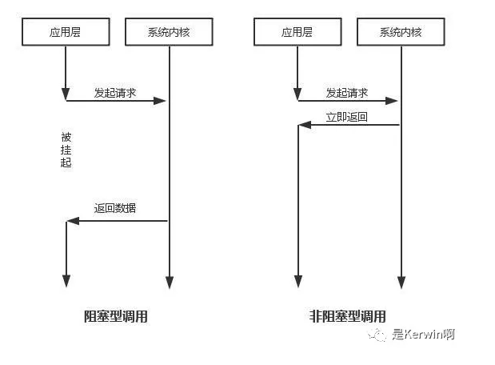
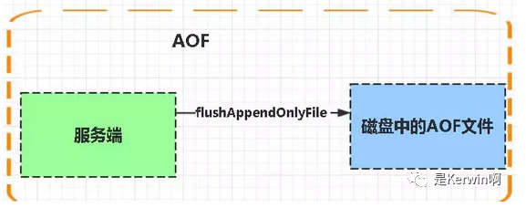
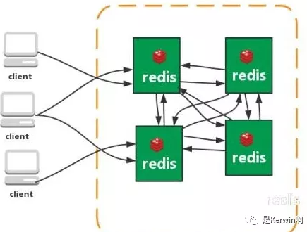
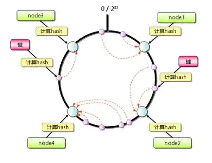
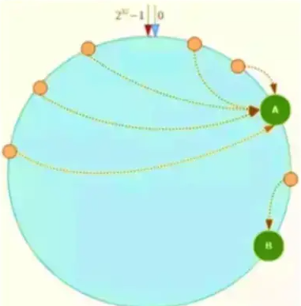
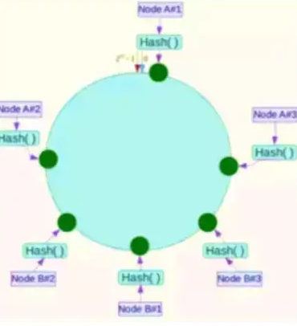
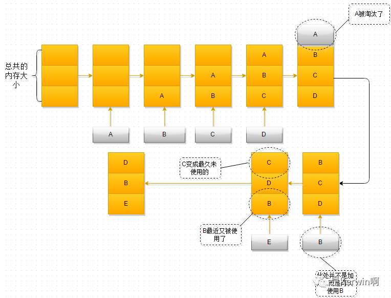

收集有关于redis的相关问题！
1、什么是Redis？
Redis本质上是一个Key-Value类型的内存数据库，很像memcached，整个数据库统统加载在内存当中进行操作，定期通过异步操作把数据库数据flush到硬盘上进行保存。因为是纯内存操作，Redis的性能非常出色，每秒可以处理超过 10万次读写操作，是已知性能最快的Key-Value DB。 Redis的出色之处不仅仅是性能，Redis最大的魅力是支持保存多种数据结构，此外单个value的最大限制是1GB，不像 memcached只能保存1MB的数据，因此Redis可以用来实现很多有用的功能，比方说用他的List来做FIFO双向链表，实现一个轻量级的高性 能消息队列服务，用他的Set可以做高性能的tag系统等等。另外Redis也可以对存入的Key-Value设置expire时间，因此也可以被当作一 个功能加强版的memcached来用。 Redis的主要缺点是数据库容量受到物理内存的限制，不能用作海量数据的高性能读写，因此Redis适合的场景主要局限在较小数据量的高性能操作和运算上。
2、Redis相比memcached有哪些优势？
(1) memcached所有的值均是简单的字符串，redis作为其替代者，支持更为丰富的数据类型
(2) redis的速度比memcached快很多
(3) redis可以持久化其数据
3、Redis支持哪几种数据类型？
String、List、Set、Sorted Set、hashes
4、Redis主要消耗什么物理资源？
内存。
5、Redis的全称是什么？
Remote Dictionary Server。
6、Redis有哪几种数据淘汰策略？
noeviction:返回错误当内存限制达到并且客户端尝试执行会让更多内存被使用的命令（大部分的写入指令，但DEL和几个例外）
allkeys-lru: 尝试回收最少使用的键（LRU），使得新添加的数据有空间存放。
volatile-lru: 尝试回收最少使用的键（LRU），但仅限于在过期集合的键,使得新添加的数据有空间存放。
allkeys-random: 回收随机的键使得新添加的数据有空间存放。
volatile-random: 回收随机的键使得新添加的数据有空间存放，但仅限于在过期集合的键。
volatile-ttl: 回收在过期集合的键，并且优先回收存活时间（TTL）较短的键,使得新添加的数据有空间存放。
7、Redis官方为什么不提供Windows版本？
因为目前Linux版本已经相当稳定，而且用户量很大，无需开发windows版本，反而会带来兼容性等问题。
8、一个字符串类型的值能存储最大容量是多少？
512M
9、为什么Redis需要把所有数据放到内存中？
Redis为了达到最快的读写速度将数据都读到内存中，并通过异步的方式将数据写入磁盘。所以redis具有快速和数据持久化的特征。如果不将数据放在内存中，磁盘I/O速度为严重影响redis的性能。在内存越来越便宜的今天，redis将会越来越受欢迎。 如果设置了最大使用的内存，则数据已有记录数达到内存限值后不能继续插入新值。
10、Redis集群方案应该怎么做？都有哪些方案？
1.twemproxy，大概概念是，它类似于一个代理方式，使用方法和普通redis无任何区别，设置好它下属的多个redis实例后，使用时在本需要连接redis的地方改为连接twemproxy，它会以一个代理的身份接收请求并使用一致性hash算法，将请求转接到具体redis，将结果再返回twemproxy。使用方式简便(相对redis只需修改连接端口)，对旧项目扩展的首选。 问题：twemproxy自身单端口实例的压力，使用一致性hash后，对redis节点数量改变时候的计算值的改变，数据无法自动移动到新的节点。
2.codis，目前用的最多的集群方案，基本和twemproxy一致的效果，但它支持在 节点数量改变情况下，旧节点数据可恢复到新hash节点。
3.redis cluster3.0自带的集群，特点在于他的分布式算法不是一致性hash，而是hash槽的概念，以及自身支持节点设置从节点。具体看官方文档介绍。
4.在业务代码层实现，起几个毫无关联的redis实例，在代码层，对key 进行hash计算，然后去对应的redis实例操作数据。 这种方式对hash层代码要求比较高，考虑部分包括，节点失效后的替代算法方案，数据震荡后的自动脚本恢复，实例的监控，等等。
11、Redis集群方案什么情况下会导致整个集群不可用？
有A，B，C三个节点的集群,在没有复制模型的情况下,如果节点B失败了，那么整个集群就会以为缺少5501-11000这个范围的槽而不可用。
12、MySQL里有2000w数据，redis中只存20w的数据，如何保证redis中的数据都是热点数据？
redis内存数据集大小上升到一定大小的时候，就会施行数据淘汰策略。
13、Redis有哪些适合的场景？
（1）、会话缓存（Session Cache）
最常用的一种使用Redis的情景是会话缓存（session cache）。用Redis缓存会话比其他存储（如Memcached）的优势在于：Redis提供持久化。当维护一个不是严格要求一致性的缓存时，如果用户的购物车信息全部丢失，大部分人都会不高兴的，现在，他们还会这样吗？
幸运的是，随着 Redis 这些年的改进，很容易找到怎么恰当的使用Redis来缓存会话的文档。甚至广为人知的商业平台Magento也提供Redis的插件。
（2）、全页缓存（FPC）
除基本的会话token之外，Redis还提供很简便的FPC平台。回到一致性问题，即使重启了Redis实例，因为有磁盘的持久化，用户也不会看到页面加载速度的下降，这是一个极大改进，类似PHP本地FPC。
再次以Magento为例，Magento提供一个插件来使用Redis作为全页缓存后端。
此外，对WordPress的用户来说，Pantheon有一个非常好的插件 wp-redis，这个插件能帮助你以最快速度加载你曾浏览过的页面。
（3）、队列
Reids在内存存储引擎领域的一大优点是提供 list 和 set 操作，这使得Redis能作为一个很好的消息队列平台来使用。Redis作为队列使用的操作，就类似于本地程序语言（如Python）对 list 的 push/pop 操作。
如果你快速的在Google中搜索“Redis queues”，你马上就能找到大量的开源项目，这些项目的目的就是利用Redis创建非常好的后端工具，以满足各种队列需求。例如，Celery有一个后台就是使用Redis作为broker，你可以从这里去查看。
（4），排行榜/计数器
Redis在内存中对数字进行递增或递减的操作实现的非常好。集合（Set）和有序集合（Sorted Set）也使得我们在执行这些操作的时候变的非常简单，Redis只是正好提供了这两种数据结构。所以，我们要从排序集合中获取到排名最靠前的10个用户–我们称之为“user_scores”，我们只需要像下面一样执行即可：
当然，这是假定你是根据你用户的分数做递增的排序。如果你想返回用户及用户的分数，你需要这样执行：
ZRANGE user_scores 0 10 WITHSCORES
Agora Games就是一个很好的例子，用Ruby实现的，它的排行榜就是使用Redis来存储数据的，你可以在这里看到。
（5）、发布/订阅
最后（但肯定不是最不重要的）是Redis的发布/订阅功能。发布/订阅的使用场景确实非常多。我已看见人们在社交网络连接中使用，还可作为基于发布/订阅的脚本触发器，甚至用Redis的发布/订阅功能来建立聊天系统！（不，这是真的，你可以去核实）。
14、Redis支持的Java客户端都有哪些？官方推荐用哪个？
Redisson、Jedis、lettuce等等，官方推荐使用Redisson。
15、Redis和Redisson有什么关系？
Redisson是一个高级的分布式协调Redis客服端，能帮助用户在分布式环境中轻松实现一些Java的对象 (Bloom filter, BitSet, Set, SetMultimap, ScoredSortedSet, SortedSet, Map, ConcurrentMap, List, ListMultimap, Queue, BlockingQueue, Deque, BlockingDeque, Semaphore, Lock, ReadWriteLock, AtomicLong, CountDownLatch, Publish / Subscribe, HyperLogLog)。
16、Jedis与Redisson对比有什么优缺点？
Jedis是Redis的Java实现的客户端，其API提供了比较全面的Redis命令的支持；Redisson实现了分布式和可扩展的Java数据结构，和Jedis相比，功能较为简单，不支持字符串操作，不支持排序、事务、管道、分区等Redis特性。Redisson的宗旨是促进使用者对Redis的关注分离，从而让使用者能够将精力更集中地放在处理业务逻辑上。
17、Redis如何设置密码及验证密码？
设置密码：config set requirepass 123456
授权密码：auth 123456
18、说说Redis哈希槽的概念？
Redis集群没有使用一致性hash,而是引入了哈希槽的概念，Redis集群有16384个哈希槽，每个key通过CRC16校验后对16384取模来决定放置哪个槽，集群的每个节点负责一部分hash槽。
19、Redis集群的主从复制模型是怎样的？
为了使在部分节点失败或者大部分节点无法通信的情况下集群仍然可用，所以集群使用了主从复制模型,每个节点都会有N-1个复制品.
20、Redis集群会有写操作丢失吗？为什么？
Redis并不能保证数据的强一致性，这意味这在实际中集群在特定的条件下可能会丢失写操作。
21、Redis集群之间是如何复制的？
异步复制
22、Redis集群最大节点个数是多少？
16384个。
23、Redis集群如何选择数据库？
Redis集群目前无法做数据库选择，默认在0数据库。
24、怎么测试Redis的连通性？
ping
25、Redis中的管道有什么用？
一次请求/响应服务器能实现处理新的请求即使旧的请求还未被响应。这样就可以将多个命令发送到服务器，而不用等待回复，最后在一个步骤中读取该答复。
这就是管道（pipelining），是一种几十年来广泛使用的技术。例如许多POP3协议已经实现支持这个功能，大大加快了从服务器下载新邮件的过程。
26、怎么理解Redis事务？
事务是一个单独的隔离操作：事务中的所有命令都会序列化、按顺序地执行。事务在执行的过程中，不会被其他客户端发送来的命令请求所打断。
事务是一个原子操作：事务中的命令要么全部被执行，要么全部都不执行。
27、Redis事务相关的命令有哪几个？
MULTI、EXEC、DISCARD、WATCH
28、Redis key的过期时间和永久有效分别怎么设置？
EXPIRE和PERSIST命令。
29、Redis如何做内存优化？
尽可能使用散列表（hashes），散列表（是说散列表里面存储的数少）使用的内存非常小，所以你应该尽可能的将你的数据模型抽象到一个散列表里面。比如你的web系统中有一个用户对象，不要为这个用户的名称，姓氏，邮箱，密码设置单独的key,而是应该把这个用户的所有信息存储到一张散列表里面.
30、Redis回收进程如何工作的？
- 一个客户端运行了新的命令，添加了新的数据。
- Redi检查内存使用情况，如果大于maxmemory的限制, 则根据设定好的策略进行回收。
- 一个新的命令被执行，等等。
- 所以我们不断地穿越内存限制的边界，通过不断达到边界然后不断地回收回到边界以下。
如果一个命令的结果导致大量内存被使用（例如很大的集合的交集保存到一个新的键），不用多久内存限制就会被这个内存使用量超越。
31、Redis回收使用的是什么算法？
LRU算法
32、Redis如何做大量数据插入？
Redis2.6开始redis-cli支持一种新的被称之为pipe mode的新模式用于执行大量数据插入工作。
33、为什么要做Redis分区？
分区可以让Redis管理更大的内存，Redis将可以使用所有机器的内存。如果没有分区，你最多只能使用一台机器的内存。分区使Redis的计算能力通过简单地增加计算机得到成倍提升,Redis的网络带宽也会随着计算机和网卡的增加而成倍增长。
34、你知道有哪些Redis分区实现方案？
- 客户端分区就是在客户端就已经决定数据会被存储到哪个redis节点或者从哪个redis节点读取。大多数客户端已经实现了客户端分区。
- 代理分区 意味着客户端将请求发送给代理，然后代理决定去哪个节点写数据或者读数据。代理根据分区规则决定请求哪些Redis实例，然后根据Redis的响应结果返回给客户端。redis和memcached的一种代理实现就是Twemproxy
- 查询路由(Query routing) 的意思是客户端随机地请求任意一个redis实例，然后由Redis将请求转发给正确的Redis节点。Redis Cluster实现了一种混合形式的查询路由，但并不是直接将请求从一个redis节点转发到另一个redis节点，而是在客户端的帮助下直接redirected到正确的redis节点。
35、Redis分区有什么缺点？
- 涉及多个key的操作通常不会被支持。例如你不能对两个集合求交集，因为他们可能被存储到不同的Redis实例（实际上这种情况也有办法，但是不能直接使用交集指令）。
- 同时操作多个key,则不能使用Redis事务.
- 分区使用的粒度是key，不能使用一个非常长的排序key存储一个数据集（The partitioning granularity is the key, so it is not possible to shard a dataset with a single huge key like a very big sorted set）.
- 当使用分区的时候，数据处理会非常复杂，例如为了备份你必须从不同的Redis实例和主机同时收集RDB / AOF文件。
- 分区时动态扩容或缩容可能非常复杂。Redis集群在运行时增加或者删除Redis节点，能做到最大程度对用户透明地数据再平衡，但其他一些客户端分区或者代理分区方法则不支持这种特性。然而，有一种预分片的技术也可以较好的解决这个问题。
36、Redis持久化数据和缓存怎么做扩容？
- 如果Redis被当做缓存使用，使用一致性哈希实现动态扩容缩容。
- 如果Redis被当做一个持久化存储使用，必须使用固定的keys-to-nodes映射关系，节点的数量一旦确定不能变化。否则的话(即Redis节点需要动态变化的情况），必须使用可以在运行时进行数据再平衡的一套系统，而当前只有Redis集群可以做到这样。
37、分布式Redis是前期做还是后期规模上来了再做好？为什么？
既然Redis是如此的轻量（单实例只使用1M内存）,为防止以后的扩容，最好的办法就是一开始就启动较多实例。即便你只有一台服务器，你也可以一开始就让Redis以分布式的方式运行，使用分区，在同一台服务器上启动多个实例。
一开始就多设置几个Redis实例，例如32或者64个实例，对大多数用户来说这操作起来可能比较麻烦，但是从长久来看做这点牺牲是值得的。
这样的话，当你的数据不断增长，需要更多的Redis服务器时，你需要做的就是仅仅将Redis实例从一台服务迁移到另外一台服务器而已（而不用考虑重新分区的问题）。一旦你添加了另一台服务器，你需要将你一半的Redis实例从第一台机器迁移到第二台机器。
38、Twemproxy是什么？
Twemproxy是Twitter维护的（缓存）代理系统，代理Memcached的ASCII协议和Redis协议。它是单线程程序，使用c语言编写，运行起来非常快。它是采用Apache 2.0 license的开源软件。 Twemproxy支持自动分区，如果其代理的其中一个Redis节点不可用时，会自动将该节点排除（这将改变原来的keys-instances的映射关系，所以你应该仅在把Redis当缓存时使用Twemproxy)。 Twemproxy本身不存在单点问题，因为你可以启动多个Twemproxy实例，然后让你的客户端去连接任意一个Twemproxy实例。 Twemproxy是Redis客户端和服务器端的一个中间层，由它来处理分区功能应该不算复杂，并且应该算比较可靠的。
39、支持一致性哈希的客户端有哪些？
Redis-rb、Predis等。
40、Redis与其他key-value存储有什么不同？
- Redis有着更为复杂的数据结构并且提供对他们的原子性操作，这是一个不同于其他数据库的进化路径。Redis的数据类型都是基于基本数据结构的同时对程序员透明，无需进行额外的抽象。
- Redis运行在内存中但是可以持久化到磁盘，所以在对不同数据集进行高速读写时需要权衡内存，应为数据量不能大于硬件内存。在内存数据库方面的另一个优点是， 相比在磁盘上相同的复杂的数据结构，在内存中操作起来非常简单，这样Redis可以做很多内部复杂性很强的事情。 同时，在磁盘格式方面他们是紧凑的以追加的方式产生的，因为他们并不需要进行随机访问。
41、Redis的内存占用情况怎么样？
给你举个例子： 100万个键值对（键是0到999999值是字符串“hello world”）在我的32位的Mac笔记本上 用了100MB。同样的数据放到一个key里只需要16MB， 这是因为键值有一个很大的开销。 在Memcached上执行也是类似的结果，但是相对Redis的开销要小一点点，因为Redis会记录类型信息引用计数等等。
当然，大键值对时两者的比例要好很多。
64位的系统比32位的需要更多的内存开销，尤其是键值对都较小时，这是因为64位的系统里指针占用了8个字节。 但是，当然，64位系统支持更大的内存，所以为了运行大型的Redis服务器或多或少的需要使用64位的系统。
42、都有哪些办法可以降低Redis的内存使用情况呢？
如果你使用的是32位的Redis实例，可以好好利用Hash,list,sorted set,set等集合类型数据，因为通常情况下很多小的Key-Value可以用更紧凑的方式存放到一起。
43、查看Redis使用情况及状态信息用什么命令？
info
44、Redis的内存用完了会发生什么？
如果达到设置的上限，Redis的写命令会返回错误信息（但是读命令还可以正常返回。）或者你可以将Redis当缓存来使用配置淘汰机制，当Redis达到内存上限时会冲刷掉旧的内容。
45、Redis是单线程的，如何提高多核CPU的利用率？
可以在同一个服务器部署多个Redis的实例，并把他们当作不同的服务器来使用，在某些时候，无论如何一个服务器是不够的， 所以，如果你想使用多个CPU，你可以考虑一下分片（shard）。
46、一个Redis实例最多能存放多少的keys？List、Set、Sorted Set他们最多能存放多少元素？
理论上Redis可以处理多达232的keys，并且在实际中进行了测试，每个实例至少存放了2亿5千万的keys。我们正在测试一些较大的值。
任何list、set、和sorted set都可以放232个元素。
换句话说，Redis的存储极限是系统中的可用内存值。
47、Redis常见性能问题和解决方案？
(1) Master最好不要做任何持久化工作，如RDB内存快照和AOF日志文件
(2) 如果数据比较重要，某个Slave开启AOF备份数据，策略设置为每秒同步一次
(3) 为了主从复制的速度和连接的稳定性，Master和Slave最好在同一个局域网内
(4) 尽量避免在压力很大的主库上增加从库
(5) 主从复制不要用图状结构，用单向链表结构更为稳定，即：Master <- Slave1 <- Slave2 <- Slave3…
这样的结构方便解决单点故障问题，实现Slave对Master的替换。如果Master挂了，可以立刻启用Slave1做Master，其他不变。
48、Redis提供了哪几种持久化方式？
- RDB持久化方式能够在指定的时间间隔能对你的数据进行快照存储.
- AOF持久化方式记录每次对服务器写的操作,当服务器重启的时候会重新执行这些命令来恢复原始的数据,AOF命令以redis协议追加保存每次写的操作到文件末尾.Redis还能对AOF文件进行后台重写,使得AOF文件的体积不至于过大.
- 如果你只希望你的数据在服务器运行的时候存在,你也可以不使用任何持久化方式.
- 你也可以同时开启两种持久化方式, 在这种情况下, 当redis重启的时候会优先载入AOF文件来恢复原始的数据,因为在通常情况下AOF文件保存的数据集要比RDB文件保存的数据集要完整.
- 最重要的事情是了解RDB和AOF持久化方式的不同,让我们以RDB持久化方式开始。
49、如何选择合适的持久化方式？
一般来说， 如果想达到足以媲美PostgreSQL的数据安全性， 你应该同时使用两种持久化功能。如果你非常关心你的数据， 但仍然可以承受数分钟以内的数据丢失，那么你可以只使用RDB持久化。
有很多用户都只使用AOF持久化，但并不推荐这种方式：因为定时生成RDB快照（snapshot）非常便于进行数据库备份， 并且 RDB 恢复数据集的速度也要比AOF恢复的速度要快，除此之外， 使用RDB还可以避免之前提到的AOF程序的bug。
50、修改配置不重启Redis会实时生效吗？
针对运行实例，有许多配置选项可以通过 CONFIG SET 命令进行修改，而无需执行任何形式的重启。 从 Redis 2.2 开始，可以从 AOF 切换到 RDB 的快照持久性或其他方式而不需要重启 Redis。检索 ‘CONFIG GET *’ 命令获取更多信息。
但偶尔重新启动是必须的，如为升级 Redis 程序到新的版本，或者当你需要修改某些目前 CONFIG 命令还不支持的配置参数的时候。
51、为什么Redis能这么快
1.Redis完全基于内存，绝大部分请求是纯粹的内存操作，执行效率高。
2.Redis使用单进程单线程模型的(K,V)数据库，将数据存储在内存中，存取均不会受到硬盘IO的限制，因此其执行速度极快，另外单线程也能处理高并发请求，还可以避免频繁上下文切换和锁的竞争，同时由于单线程操作，也可以避免各种锁的使用，进一步提高效率
3.数据结构简单，对数据操作也简单，Redis不使用表，不会强制用户对各个关系进行关联，不会有复杂的关系限制，其存储结构就是键值对，类似于HashMap，HashMap最大的优点就是存取的时间复杂度为O(1)
5.C语言编写，效率更高
6.Redis使用多路I/O复用模型，为非阻塞IO
7.有专门设计的RESP协议针对第四点进行说明 ->
常见的IO模型有四种：
- 同步阻塞IO（Blocking IO）：即传统的IO模型。
- 同步非阻塞IO（Non-blocking IO）：默认创建的socket都是阻塞的，非阻塞IO要求socket被设置为NONBLOCK。注意这里所说的NIO并非Java的NIO（New IO）库。
- IO多路复用（IO Multiplexing）：即经典的Reactor设计模式，有时也称为异步阻塞IO，Java中的Selector和Linux中的epoll都是这种模型。
- 异步IO（Asynchronous IO）：即经典的Proactor设计模式，也称为异步非阻塞IO
同步异步，阻塞非阻塞的概念：


假设Redis采用同步阻塞IO：
Redis主程序（服务端 单线程）-> 多个客户端连接（真实情况是如开发人员连接redis，程序 redispool连接redis），这每一个都对应着一个客户端，假设为100个客户端，其中一个进行交互时候，如果采用同步阻塞式，那么剩下的99个都需要原地等待，这势必是不科学的。
IO多路复用
Redis 采用 I/O 多路复用模型
I/O 多路复用模型中，最重要的函数调用就是
select，该方法的能够同时监控多个文件描述符的可读可写情况，当其中的某些文件描述符可读或者可写时，select方法就会返回可读以及可写的文件描述符个数注：redis默认使用的是更加优化的算法：epoll
select poll epoll 操作方式 遍历 遍历 回调 底层实现 数组 链表 哈希表 IO效率 每次调用都进行线性遍历，时间复杂度为O(n) 每次调用都进行线性遍历，时间复杂度为O(n) 事件通知方式，每当fd就绪，系统注册的回调函数就会被调用，将就绪fd放到readyList里面，时间复杂度O(1) 最大连接数 1024（x86）或2048（x64） 无上限 无上限 所以我们可以说Redis是这样的：服务端单线程毫无疑问，多客户端连接时候，如果客户端没有发起任何动作，则服务端会把其视为不活跃的IO流，将其挂起，当有真正的动作时，会通过回调的方式执行相应的事件
52、从海量Key里查询出某一个固定前缀的Key
A. 笨办法：KEYS [pattern] 注意key很多的话，这样做肯定会出问题，造成redis崩溃
B. SCAN cursor [MATCH pattern] [COUNT count] 游标方式查找
53、如何通过Redis实现分布式锁
见上文54、如何实现异步队列
上文说到利用 redis-list 实现队列
假设场景:A服务生产数据 - B服务消费数据，即可利用此种模型构造-生产消费者模型
1. 使用Redis中的List作为队列
2.使用BLPOP key [key...] timeout -> LPOP key [key ...] timeout:阻塞直到队列有消息或者超时
（方案二：解决方案一中，拿数据的时，生产者尚未生产的情况）
3.pub/sub：主题订阅者模式
基于reds的终极方案，上文有介绍，基于发布/订阅模式
缺点:消息的发布是无状态的，无法保证可达。对于发布者来说，消息是“即发即失”的，此时如果某个消费者在生产者发布消息时下线，重新上线之后，是无法接收该消息的，要解决该问题需要使用专业的消息队列55、Redis支持的数据类型？
见上文56、什么是Redis持久化？Redis有哪几种持久化方式？优缺点是什么？
持久化就是把内存的数据写到磁盘中去，防止服务宕机了内存数据丢失。
Redis 提供了两种持久化方式:RDB（默认） 和AOF
RDB：
rdb是Redis DataBase缩写
功能核心函数rdbSave(生成RDB文件)和rdbLoad（从文件加载内存）两个函数
RDB: 把当前进程数据生成快照文件保存到硬盘的过程。分为手动触发和自动触发
手动触发 -> save (不推荐，阻塞严重) bgsave -> （save的优化版，微秒级阻塞）
shutdowm 关闭服务时，如果没有配置AOF，则会使用bgsave持久化数据bgsave - 工作原理
会从当前父进程fork一个子进程，然后生成rdb文件
缺点：频率低，无法做到实时持久化
AOF:
Aof是Append-only file缩写，AOF文件存储的也是RESP协议

每当执行服务器(定时)任务或者函数时flushAppendOnlyFile 函数都会被调用， 这个函数执行以下两个工作
aof写入保存：
WRITE：根据条件，将 aof_buf 中的缓存写入到 AOF 文件
SAVE：根据条件，调用 fsync 或 fdatasync 函数，将 AOF 文件保存到磁盘中。
存储结构:
内容是redis通讯协议(RESP )格式的命令文本存储
原理：
相当于存储了redis的执行命令(类似mysql的sql语句日志)，数据的完整性和一致性更高
比较：
1、aof文件比rdb更新频率高
2、aof比rdb更安全
3、rdb性能更好
PS：正确停止redis服务 应该基于连接命令 加再上 shutdown -> 否则数据持久化会出现问题
57、redis通讯协议(RESP)
Redis 即 REmote Dictionary Server (远程字典服务)；
而Redis的协议规范是 Redis Serialization Protocol (Redis序列化协议)
RESP 是redis客户端和服务端之前使用的一种通讯协议；
RESP 的特点：实现简单、快速解析、可读性好
协议如下：
客户端以规定格式的形式发送命令给服务器
set key value 协议翻译如下： * 3 -> 表示以下有几组命令 $ 3 -> 表示命令长度是3 SET $6 -> 表示长度是6 keykey $5 -> 表示长度是5 value 完整即： * 3 $ 3 SET $6 keykey $5 value服务器在执行最后一条命令后，返回结果，返回格式如下：
For Simple Strings the first byte of the reply is “+” 回复
For Errors the first byte of the reply is “-“ 错误
For Integers the first byte of the reply is “:” 整数
For Bulk Strings the first byte of the reply is “$” 字符串
For Arrays the first byte of the reply is “*” 数组
// 伪造6379 redis-服务端，监听 jedis发送的协议内容
public class SocketApp {
/***
* 监听 6379 传输的数据
* JVM端口需要进行设置
*/
public static void main(String[] args) {
try {
ServerSocket serverSocket = new ServerSocket(6379);
Socket redis = serverSocket.accept();
byte[] result = new byte[2048];
redis.getInputStream().read(result);
System.out.println(new String(result));
} catch (Exception e) {
e.printStackTrace();
}
}
}
// jedis连接-发送命令
public class App {
public static void main(String[] args){
Jedis jedis = new Jedis("127.0.0.1");
jedis.set("key", "This is value.");
jedis.close();
}
}
// 监听命令内容如下：
*3
$3
SET
$3
key
$1458、redis架构有哪些
单节点
主从复制
Master-slave 主从赋值，此种结构可以考虑关闭master的持久化，只让从数据库进行持久化，另外可以通过读写分离，缓解主服务器压力哨兵
Redis sentinel 是一个分布式系统中监控 redis 主从服务器，并在主服务器下线时自动进行故障转移。其中三个特性：
监控（Monitoring）： Sentinel 会不断地检查你的主服务器和从服务器是否运作正常。
提醒（Notification）： 当被监控的某个 Redis 服务器出现问题时， Sentinel 可以通过 API 向管理员或者其他应用程序发送通知。
自动故障迁移（Automatic failover）： 当一个主服务器不能正常工作时， Sentinel 会开始一次自动故障迁移操作。
特点：
1、保证高可用
2、监控各个节点
3、自动故障迁移
缺点：主从模式，切换需要时间丢数据
没有解决 master 写的压力集群

从redis 3.0之后版本支持redis-cluster集群，Redis-Cluster采用无中心结构，每个节点保存数据和整个集群状态,每个节点都和其他所有节点连接。
特点：
1、无中心架构（不存在哪个节点影响性能瓶颈），少了 proxy 层。
2、数据按照 slot 存储分布在多个节点，节点间数据共享，可动态调整数据分布。
3、可扩展性，可线性扩展到 1000 个节点，节点可动态添加或删除。
4、高可用性，部分节点不可用时，集群仍可用。通过增加 Slave 做备份数据副本
5、实现故障自动 failover，节点之间通过 gossip 协议交换状态信息，用投票机制完成 Slave到 Master 的角色提升。
缺点：
1、资源隔离性较差，容易出现相互影响的情况。
2、数据通过异步复制,不保证数据的强一致性
59、Redis集群-如何从海量数据里快速找到所需？
分片
按照某种规则去划分数据，分散存储在多个节点上。通过将数据分到多个Redis服务器上，来减轻单个Redis服务器的压力。
一致性Hash算法
既然要将数据进行分片，那么通常的做法就是获取节点的Hash值，然后根据节点数求模，但这样的方法有明显的弊端，当Redis节点数需要动态增加或减少的时候，会造成大量的Key无法被命中。所以Redis中引入了一致性Hash算法。该算法对2^32 取模，将Hash值空间组成虚拟的圆环，整个圆环按顺时针方向组织，每个节点依次为0、1、2…2^32-1，之后将每个服务器进行Hash运算，确定服务器在这个Hash环上的地址，确定了服务器地址后，对数据使用同样的Hash算法，将数据定位到特定的Redis服务器上。如果定位到的地方没有Redis服务器实例，则继续顺时针寻找，找到的第一台服务器即该数据最终的服务器位置。

一致性Hash算法
Hash环的数据倾斜问题
Hash环在服务器节点很少的时候，容易遇到服务器节点不均匀的问题，这会造成数据倾斜，数据倾斜指的是被缓存的对象大部分集中在Redis集群的其中一台或几台服务器上。

如上图，一致性Hash算法运算后的数据大部分被存放在A节点上，而B节点只存放了少量的数据，久而久之A节点将被撑爆。引入虚拟节点

例如上图：将NodeA和NodeB两个节点分为Node A#1-A#3 NodeB#1-B#3。
60、什么是缓存穿透？如何避免？什么是缓存雪崩？如何避免？什么是缓存击穿？如何避免？
缓存穿透
一般的缓存系统，都是按照key去缓存查询，如果不存在对应的value，就应该去后端系统查找（比如DB）。一些恶意的请求会故意查询不存在的key,请求量很大，就会对后端系统造成很大的压力。这就叫做缓存穿透。
如何避免？
1：对查询结果为空的情况也进行缓存，缓存时间设置短一点，或者该key对应的数据insert了之后清理缓存。
2：对一定不存在的key进行过滤。可以把所有的可能存在的key放到一个大的Bitmap中，查询时通过该bitmap过滤。
3：由于请求参数是不合法的（每次都请求不存在的参数），于是我们可以使用布隆过滤器（Bloomfilter）或压缩filter提前进行拦截，不合法就不让这个请求进入到数据库层
缓存雪崩
当缓存服务器重启或者大量缓存集中在某一个时间段失效，这样在失效的时候，会给后端系统带来很大压力。导致系统崩溃。
如何避免？
1：在缓存失效后，通过加锁或者队列来控制读数据库写缓存的线程数量。比如对某个key只允许一个线程查询数据和写缓存，其他线程等待。
2：做二级缓存，A1为原始缓存，A2为拷贝缓存，A1失效时，可以访问A2，A1缓存失效时间设置为短期，A2设置为长期
3：不同的key，设置不同的过期时间，让缓存失效的时间点尽量均匀。
4：启用限流策略，尽量避免数据库被干掉
缓存击穿
概念 一个存在的key，在缓存过期的一刻，同时有大量的请求，这些请求都会击穿到DB，造成瞬时DB请求量大、压力骤增。
解决方案 A. 在访问key之前，采用SETNX（set if not exists）来设置另一个短期key来锁住当前key的访问，访问结束再删除该短期key
B. 服务层处理 - 方法加锁 + 双重校验：
// 锁-实例 private Lock lock = new ReentrantLock(); public String getProductImgUrlById(String id){ // 获取缓存 String product = jedisClient.get(PRODUCT_KEY + id); if (null == product) { // 如果没有获取锁等待3秒，SECONDS代表：秒 try { if (lock.tryLock(3, TimeUnit.SECONDS)) { try { // 获取锁后再查一次，查到了直接返回结果 product = jedisClient.get(PRODUCT_KEY + id); if (null == product) { // .... } return product; } catch (Exception e) { product = jedisClient.get(PRODUCT_KEY + id); } finally { // 释放锁（成功、失败都必须释放，如果是lock.tryLock()方法会一直阻塞在这） lock.unlock(); } } else { product = jedisClient.get(PRODUCT_KEY + id); } } catch (InterruptedException e) { product = jedisClient.get(PRODUCT_KEY + id); } } return product; }
| 解释 | 基础解决方案 | |
|---|---|---|
| 缓存穿透 | 访问一个不存在的key，缓存不起作用，请求会穿透到DB，流量大时DB会挂掉 | 1.采用布隆过滤器，使用一个足够大的bitmap，用于存储可能访问的key，不存在的key直接被过滤；2.访问key未在DB查询到值，也将空值写进缓存，但可以设置较短过期时间 |
| 缓存雪崩 | 大量的key设置了相同的过期时间，导致在缓存在同一时刻全部失效，造成瞬时DB请求量大、压力骤增，引起雪崩 | 可以给缓存设置过期时间时加上一个随机值时间，使得每个key的过期时间分布开来，不会集中在同一时刻失效 |
| 缓存击穿 | 一个存在的key，在缓存过期的一刻，同时有大量的请求，这些请求都会击穿到DB，造成瞬时DB请求量大、压力骤增 | 在访问key之前，采用SETNX（set if not exists）来设置另一个短期key来锁住当前key的访问，访问结束再删除该短期key |
61、缓存与数据库双写一致
如果仅仅是读数据，没有此类问题
如果是新增数据，也没有此类问题
当数据需要更新时，如何保证缓存与数据库的双写一致性？
三种更新策略：
- 先更新数据库，再更新缓存 ->
- 先删除缓存，再更新数据库
- 先更新数据库，再删除缓存
方案一：并发的时候，执行顺序无法保证，可能A先更新数据库，但B后更新数据库但先更新缓存
加锁的话，确实可以避免，但这样吞吐量会下降，可以根据业务场景考虑
方案二：该方案会导致不一致的原因是。同时有一个请求A进行更新操作，另一个请求B进行查询操作。那么会出现如下情形: （1）请求A进行写操作，删除缓存 （2）请求B查询发现缓存不存在 （3）请求B去数据库查询得到旧值 （4）请求B将旧值写入缓存 （5）请求A将新值写入数据库
因此采用：采用延时双删策略 即进入逻辑就删除Key，执行完操作，延时再删除key
方案三：更新数据库 - 删除缓存 可能出现问题的场景：
（1）缓存刚好失效 （2）请求A查询数据库，得一个旧值 （3）请求B将新值写入数据库 （4）请求B删除缓存 （5）请求A将查到的旧值写入缓存
先天条件要求：请求第二步的读取操作耗时要大于更新操作，条件较为苛刻
但如果真的发生怎么处理？
A. 给键设置合理的过期时间
B. 异步延时删除key
62、何保证Redis中的数据都是热点数据
A. 可以通过手工或者主动方式，去加载热点数据
B. Redis有其自己的数据淘汰策略：
redis 内存数据集大小上升到一定大小的时候，就会施行数据淘汰策略（回收策略）。redis 提供 6种数据淘汰策略：
- volatile-lru：从已设置过期时间的数据集（server.db[i].expires）中挑选最近最少使用的数据淘汰
- volatile-ttl：从已设置过期时间的数据集（server.db[i].expires）中挑选将要过期的数据淘汰
- volatile-random：从已设置过期时间的数据集（server.db[i].expires）中任意选择数据淘汰
- allkeys-lru：从数据集（server.db[i].dict）中挑选最近最少使用的数据淘汰
- allkeys-random：从数据集（server.db[i].dict）中任意选择数据淘汰
- no-enviction（驱逐）：禁止驱逐数据
63、Redis的并发竞争问题如何解决?
即多线程同时操作统一Key的解决办法：
Redis为单进程单线程模式，采用队列模式将并发访问变为串行访问。Redis本身没有锁的概念，Redis对于多个客户端连接并不存在竞争，但是在Jedis客户端对Redis进行并发访问时会发生连接超时、数据转换错误、阻塞、客户端关闭连接等问题，这些问题均是由于客户端连接混乱造成
对此有多种解决方法：
A：条件允许的情况下，请使用redis自带的incr命令,decr命令
B：乐观锁方式
watch price
get price $price
$price = $price + 10
multi
set price $price
exec
C：针对客户端，操作同一个key的时候，进行加锁处理
D：场景允许的话，使用setnx 实现64、Redis回收进程如何工作的? Redis回收使用的是什么算法?
62 中提到过，当所需内存超过配置的最大内存时，redis会启用数据淘汰规则
默认规则是：# maxmemory-policy noeviction
即只允许读，无法继续添加key
因此常需要配置淘汰策略，比如LRU算法

LRU算法最为精典的实现，就是HashMap+Double LinkedList，时间复杂度为O(1)
65、Redis大批量增加数据
参考文章：https://www.cnblogs.com/PatrickLiu/p/8548580.html
使用管道模式，运行的命令如下所示：
cat data.txt | redis-cli --pipedata.txt文本：
SET Key0 Value0 SET Key1 Value1 ... SET KeyN ValueN # 或者是 RESP协议内容 - 注意文件编码！！！ *8 $5 HMSET $8 person:1 $2 id $1 1这将产生类似于这样的输出：
All data transferred. Waiting for the last reply... Last reply received from server. errors: 0, replies: 1000000redis-cli实用程序还将确保只将从Redis实例收到的错误重定向到标准输出
演示：
cat redis_commands.txt | redis-cli -h 192.168.127.130 -p 6379 [-a "password"] -n 0 --pipe All data transferred.Waiting for the last reply... Last reply received from server. errors:0，replies：10000000
mysql数据快速导入到redis 实战：文件详情：可见Redis-通道实战博文：https://www.cnblogs.com/tommy-huang/p/4703514.html
# 1.准备一个table create database if not exists `test`; use `test`; CREATE TABLE `person` ( `id` int(10) unsigned NOT NULL AUTO_INCREMENT, `name` varchar(200) NOT NULL, `age` varchar(200) NOT NULL, PRIMARY KEY (`id`) ) ENGINE=MyISAM AUTO_INCREMENT=1 DEFAULT CHARSET=utf8; # 2.插入七八万条数据 # 3.SQL查询，将其转化为 RESP协议命令 Linux 版本： -> 不要在windows环境试，没啥意义 SELECT CONCAT( "*8\r\n", '$',LENGTH(redis_cmd),'\r\n',redis_cmd,'\r\n', '$',LENGTH(redis_key),'\r\n',redis_key,'\r\n', '$',LENGTH(hkey1),'\r\n',hkey1,'\r\n','$',LENGTH(hval1),'\r\n',hval1,'\r\n', '$',LENGTH(hkey2),'\r\n',hkey2,'\r\n','$',LENGTH(hval2),'\r\n',hval2,'\r\n', '$',LENGTH(hkey3),'\r\n',hkey3,'\r\n','$',LENGTH(hval3),'\r\n',hval3,'\r' )FROM( SELECT 'HMSET' AS redis_cmd, concat_ws(':','person', id) AS redis_key, 'id' AS hkey1, id AS hval1, 'name' AS hkey2, name AS hval2, 'age' AS hkey3, age AS hval3 From person )AS t # 4.如果用的就是线上数据库+线上Linux -> 把sql存到 order.sql，进行执行 mysql -uroot -p123456 test --default-character-set=utf8 --skip-column-names --raw < order.sql | redis-cli -h 127.0.0.1 -p 6379 -a 123456 --pipe # 5.本地数据库+线上redis 利用Navicat导出数据 -> data.txt，清理格式（导出来的数据里面各种 " 符号），全局替换即可 cat data.txt | redis-cli -h 127.0.0.1 -p 6379 -a 123456 --pipe 81921条数据 一瞬间导入完成 注意事项：RESP协议要求，不要有莫名其妙的字符，注意文件类型是Unix编码类型
66、延申：布隆过滤器
数据结构及算法篇 / 布隆过滤器
Redis 实现
redis 4.X 以上 提供 布隆过滤器插件
centos中安装redis插件bloom-filter：https://blog.csdn.net/u013030276/article/details/88350641
语法：[bf.add key options]
语法：[bf.exists key options]
注意:
redis 布隆过滤器提供的是 最大内存512M，2亿数据，万分之一的误差率
67、Lua脚本相关
使用Lua脚本的好处：
- 减少网络开销。可以将多个请求通过脚本的形式一次发送，减少网络时延
- 原子操作，redis会将整个脚本作为一个整体执行，中间不会被其他命令插入。因此在编写脚本的过程中无需担心会出现竞态条件，无需使用事务
- 复用，客户端发送的脚本会永久存在redis中，这样，其他客户端可以复用这一脚本而不需要使用代码完成相同的逻辑
@RequestMapping("/testLua")
public String testLua () {
String key = "mylock";
String value = "xxxxxxxxxxxxxxx";
// if redis.call('get', KEYS[1]) == ARGV[1]
// then
// return redis.call('del', KEYS[1])
// else
// return 0
// end
// lua脚本，用来释放分布式锁 - 如果使用的较多，可以封装到文件中, 再进行调用
String luaScript = "if redis.call('get', KEYS[1]) == ARGV[1] then return redis.call('del',KEYS[1]) else return 0 end";
Object eval = jedis.eval(luaScript, Collections.singletonList(key), Collections.singletonList(value));
return eval.toString();
}68、性能相关 - Redis慢查询分析
redis 命令会放在redis内置队列中，然后主线程一个个执行，因此 其中一个 命令执行时间过长，会造成成批量的阻塞
命令：slowlog get 获取慢查询记录 slowlog len 获取慢查询记录量 (慢查询队列是先进先出的，因此新的值在满载的时候，旧的会出去)Redis 慢查询 -> 执行阶段耗时过长
conf文件设置：slowlog-low-slower-than 10000 -> 10000微秒,10毫秒 (默认) 0 -> 记录所有命令 -1 -> 不记录命令 slow-max-len 存放的最大条数
慢查询导致原因: value 值过大，解决办法:数据分段（更细颗粒度存放数据）
69、如何提高Redis处理效率? 基于Jedis 的批量操作 Pipelined
Jedis jedis = new Jedis("127.0.0.1", 6379);
Pipeline pipelined = jedis.pipelined();
for (String key : keys) {
pipelined.del(key);
}
pipelined.sync();
jedis.close();
// pipelined 实际是封装过一层的指令集 -> 实际应用的还是单条指令，但是节省了网络传输开销（服务端到Redis环境的网络开销）